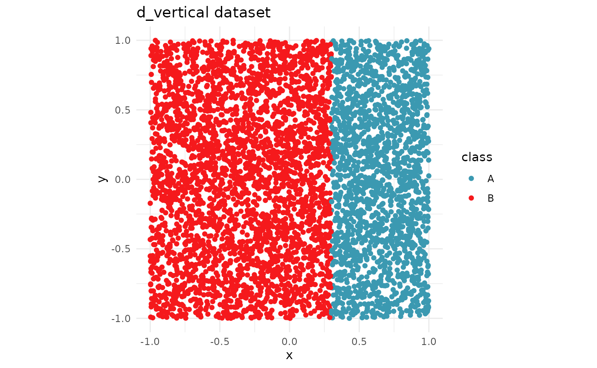
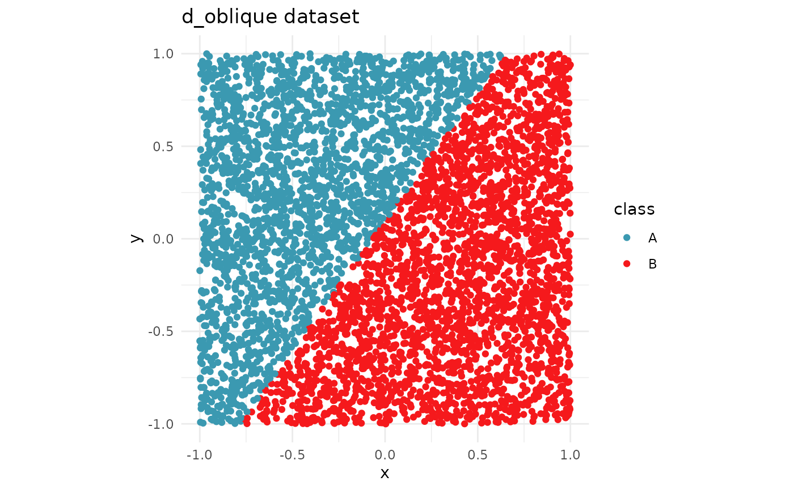
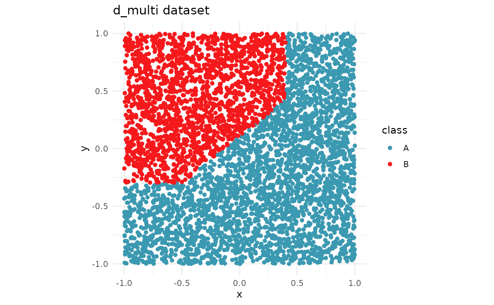
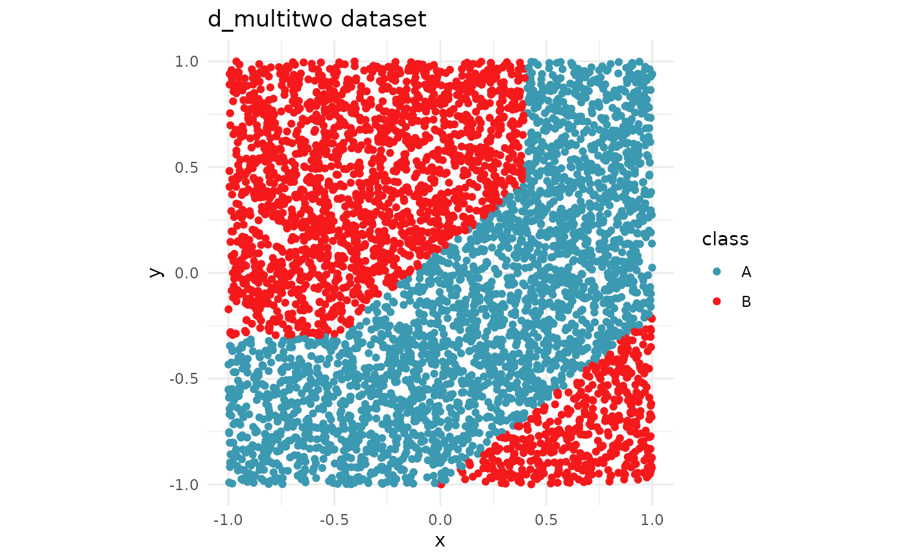

data-examples
data-examples.Rmd
library(kumquat)
library(tidyverse)
#> ── Attaching core tidyverse packages ──────────────────────── tidyverse 2.0.0 ──
#> ✔ dplyr 1.2.1 ✔ readr 2.2.0
#> ✔ forcats 1.0.1 ✔ stringr 1.6.0
#> ✔ ggplot2 4.0.3 ✔ tibble 3.3.1
#> ✔ lubridate 1.9.5 ✔ tidyr 1.3.2
#> ✔ purrr 1.2.2
#> ── Conflicts ────────────────────────────────────────── tidyverse_conflicts() ──
#> ✖ dplyr::filter() masks stats::filter()
#> ✖ dplyr::lag() masks stats::lag()
#> ℹ Use the conflicted package (<http://conflicted.r-lib.org/>) to force all conflicts to become errors
library(colorspace)There are four sample datasets in the package, with varying complexities in the decision boundary.
The datasets are as follows.
- d_vertical
- d_oblique
- d_multi
- d_multitwo
All of these datasets are made for a binary classification task. Each
dataset contains two numeric variables (x, y)
and one categorical variable (class). In this section, we
will visualize the datasets along with their decision boundary.
d_vertical dataset
data("d_vertical")
ggplot(d_vertical, aes(x = x, y = y, colour = class)) +
geom_point() +
scale_colour_discrete_divergingx(palette = "Zissou 1") +
theme_minimal() +
theme(aspect.ratio = 1) +
labs(title = "d_vertical dataset")
d_oblique dataset
data(d_oblique, package="kumquat")
ggplot(data=d_oblique, aes(x = x, y = y, colour = class)) +
geom_point() +
scale_colour_discrete_divergingx(palette = "Zissou 1") +
theme_minimal() +
theme(aspect.ratio = 1) +
labs(title = "d_oblique dataset")
d_multi dataset
data("d_multi")
ggplot(d_multi, aes(x = x, y = y, colour = class)) +
geom_point() +
scale_colour_discrete_divergingx(palette = "Zissou 1") +
theme_minimal() +
theme(aspect.ratio = 1) +
labs(title = "d_multi dataset")
d_multitwo dataset
data("d_multitwo")
ggplot(d_multitwo, aes(x = x, y = y, colour = class)) +
geom_point() +
scale_colour_discrete_divergingx(palette = "Zissou 1") +
theme_minimal() +
theme(aspect.ratio = 1) +
labs(title = "d_multitwo dataset")
Testing kumquat with the given datasets
Models
library(randomForest)
#> randomForest 4.7-1.2
#> Type rfNews() to see new features/changes/bug fixes.
#>
#> Attaching package: 'randomForest'
#> The following object is masked from 'package:dplyr':
#>
#> combine
#> The following object is masked from 'package:ggplot2':
#>
#> margin
rf_vertical <- randomForest(class ~ ., data = d_vertical)
rf_vertical_bundle <- bundle::bundle(rf_vertical)
find_closest <- function(pt, data) {
dst <- data |>
mutate(dst = sqrt((x - pt$x)^2 + (y - pt$y)^2))
return(which.min(dst$dst))
}